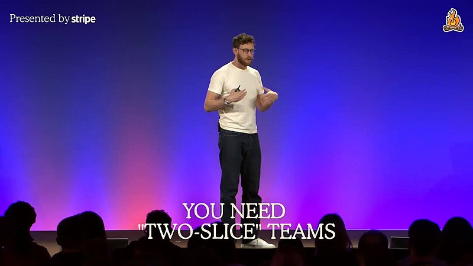

AI 日报 · 10月12日
Agent 扩张之后：权限、审计与可靠判断成为关键
Builder 讨论 Agent 协作的机会与治理难题；GitHub 和 Google Cloud 的官方资料展示沙箱、身份与数据权限如何落地。Latent Space 的生物学访谈提醒我们，模型能预测结构，不代表已经理解蛋白质全部行为。
Agent 治理
权限与审计
科学建模
GitHub Trending
5
Builder 动态
4
今日上榜项目
3
官方资料
1
公开视频
今日要点
Meta AI 的 Madhu Guru 提出“能力→信任→自主”的判断。Google Cloud 的 Gemini 工作代理说明单独身份与权限边界；GitHub 已将 Copilot 本地沙箱推至正式可用，限制文件、网络及凭据访问。前者是 Builder 观点，后两者是各厂商公布的产品机制。
Latent Space 10 月 10 日的访谈中，Google DeepMind 的 Pushmeet Kohli 说 AlphaFold 复现的是实验数据库中的结构，不能据此宣称已掌握蛋白质的全部动态与结构分布。Biohub 的 Sal Candido 强调，要先确定科学问题和所需数据，再谈扩大计算与模型。
深度对话
AlphaFold 之后：从静态结构走向真实生物过程
Latent Space 于 10 月 10 日发布 Brandon Anderson 主持的对谈，嘉宾为 Google DeepMind 的 Pushmeet Kohli 和 Biohub 的 Sal Candido。以下概括来自节目原页逐字稿；这是研究方向讨论，不是新模型发布。
先定义问题，再选择规模化路径
Candido 认为扩展定律并非在所有生物数据中天然存在；数据若缺少目标问题所需的信息，增加算力也无法补齐。Kohli 主张在建模、采集数据和领域知识之间灵活选择。
结构预测不是完整的蛋白质行为
Kohli 将 AlphaFold 的原任务界定为复现实验存入 PDB 的结构。蛋白质会随环境改变形态，动态、功能与更大尺度的相互作用仍待研究；他也提出从冷冻电镜原始图像寻找更多信息的设想。
可信度需要校准与适用范围
Kohli 强调，用户需要知道模型何时可靠、何时不可靠；即便预测准确率很高，不校准的不确定性也会误导后续实验。讨论区分了可用于决策的行为特征与对模型内部机理的完整解释。
资讯精选
官方资料：把 Agent 控制落实到运行环境
GitHub｜Copilot 本地沙箱正式可用
GitHub 10 月 7 日宣布，Copilot CLI、Copilot app 以及使用 Agent Host 的 VS Code 会话可用本地沙箱限制 Agent 对文件、网络和凭据的访问；10 月 9 日的周更再次列出该能力。具体保护范围取决于所用环境与配置。
Google Cloud｜工作代理有独立身份与权限
Google Cloud 10 月 8 日介绍 Gemini 工作代理：临时子代理可有各自身份，长期协作代理有专用邮箱与存储，只能访问用户或团队授予的上下文。文章同时列出身份、策略和成本控制；这些是厂商公布的设计与早期使用情况。
Google Cloud｜Data Agent Kit 接入数据仍按 IAM 授权
Google Cloud 9 月 30 日宣布 Data Agent Kit 正式可用，提供覆盖 15 个以上数据服务的 MCP 工具和技能。官方说明 Agent 以用户或其代入的服务账户权限连接，行列级安全策略继续生效；这是本期的治理背景资料。
Builder 动态
五条来自产品、企业与开发现场的判断
Madhu Guru｜从能力转向信任
Meta AI 的 Madhu Guru 认为，Agent 能完成任务后，重点会转到身份、权限和可观测性：系统是否采取正确动作，能否审计并追责。这是对发展方向的判断，并非已验证的行业阶段划分。
Aaron Levie｜并行协作与企业控制要一起扩展
Box CEO Levie 设想多 Agent 可在软件、安全和科研等大型任务中并行协作，进而拉高算力需求；其“1000 倍”说法是预测，不是实测。另一帖强调，对接企业敏感数据的 Agent 需要类似零信任的隔离、审计和故障控制。
Nan Yu｜工程提速后，产品沟通仍受带宽限制
OpenAI 产品负责人 Nan Yu 观察到 Agent 让工程师更有产能，但产品经理与客户对话的时间仍有限，因此提出工程与产品一比一的理想配比。这是个人组织观点，不是通用团队配置标准；配图来自其引用视频的原帖画面。

Garry Tan｜计划审批与合并门禁仍由人把关
Y Combinator 的 Garry Tan 描述自己的用法：让 Agent 协调合并队列与 CI，只让完整检查通过的改动进入主分支；他会要求规划用浅显语言解释，并亲自批准方向。这是其个人工作流。
GitHub Trending
今日上榜项目


根据 10 月 12 日 GitHub Trending 实时榜单整理；星标、分叉和语言为本次 GitHub API 快照，数字会持续变化。
今日思考
今天的讨论有两条共同线索：Agent 能并行做更多事，权限与审计就必须跟上；模型能给出有用答案，用户仍需知道答案适用于哪里、何时应当怀疑。对真实工作流，先列清可访问的数据、可执行的动作、运行记录和人工确认点，再评价速度提升。今日一问：你的 Agent 若做错一项高影响操作，团队能否还原它看到了什么、获得了哪些权限、为何做出该动作？
参考来源
Latent Space｜蛋白质建模访谈与逐字稿
Latent Space｜原频道公开视频
GitHub｜Copilot 本地沙箱
Google Cloud｜Gemini 工作代理
Google Cloud｜Data Agent Kit
Madhu Guru｜Agent 信任
Aaron Levie｜Agent 并行协作
Aaron Levie｜企业 Agent 治理
Nan Yu｜工程与产品配比
Garry Tan｜合并与 CI
Garry Tan｜计划审批
Garry Tan｜GBrain 评估
Garry Tan｜gbrain-evals 仓库
GitHub｜10 月 12 日 Trending
morluto/rea
cathrynlavery/diagram-design
bilawalsidhu/gods-eye-view
lyogavin/airllm